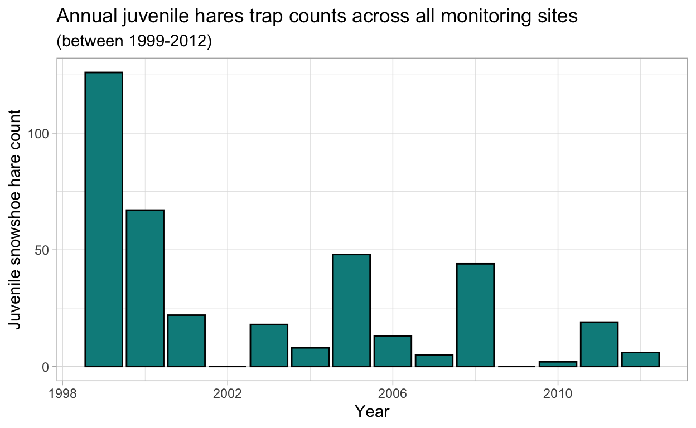
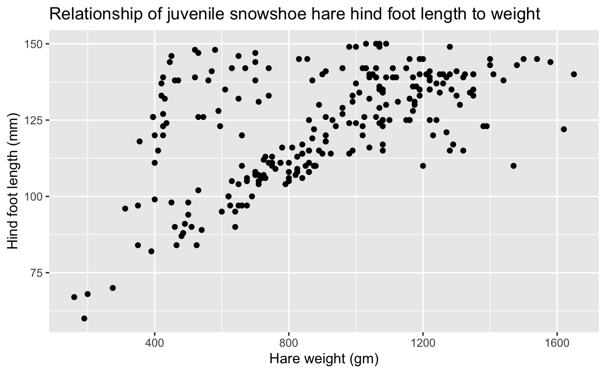
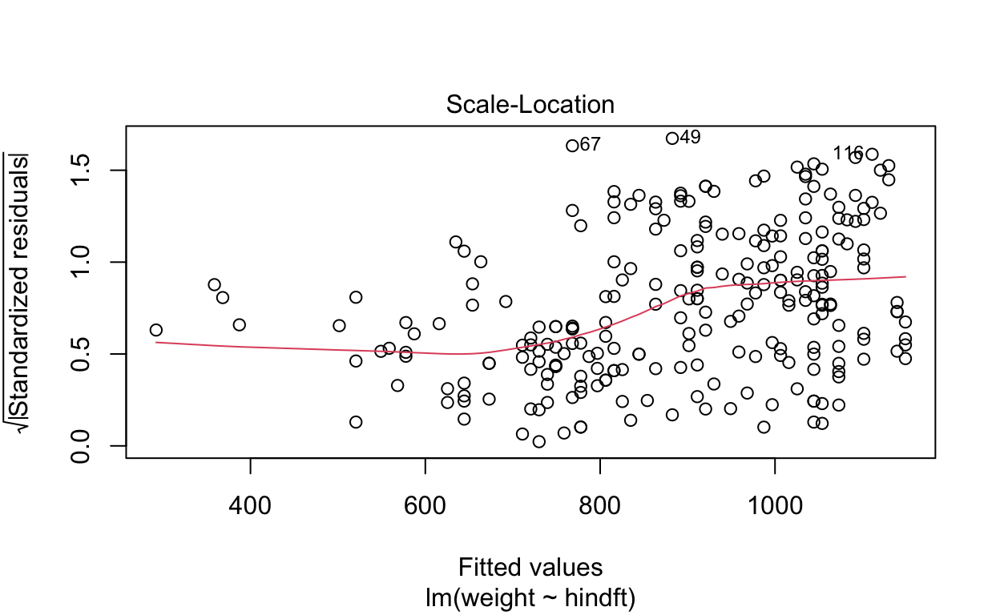
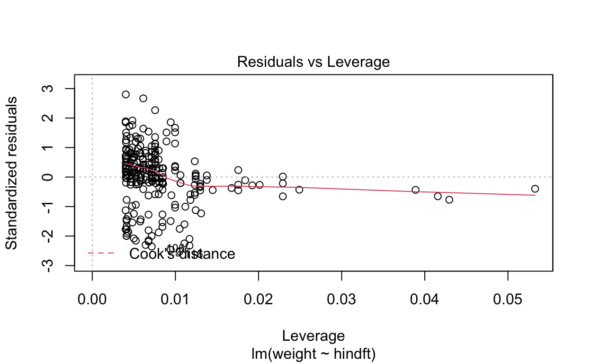
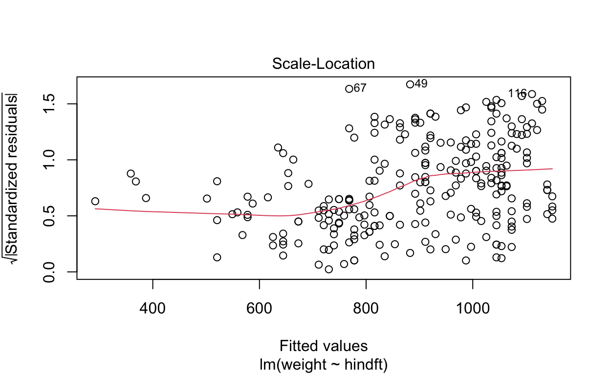
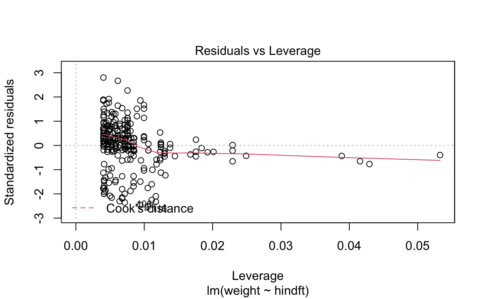
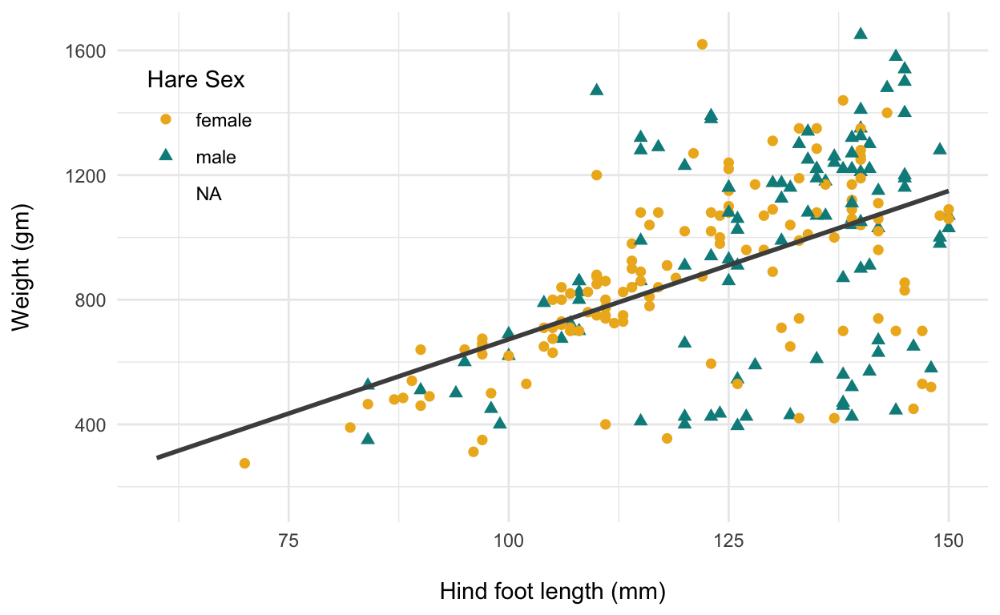

Introduction
This report provides an exploratory overview of differences in snowshoe hare weights between male and female sexes at three different monitoring sites within the Bonanza Creek U.S. Long Term Ecological Research Network in Interior Alaska from 1999 - 2012 (Kielland et al.2017). Specifically, weight is compared between sex, and the relationship between weight and hind foot length are explored.
Data and analyses
Snowshoe hare measurements were collected and made available by Dr.Knut Kielland and colleagues at the Bonanza Creek LTER network site in Bonanza Creek Experimental Forest in Interior Alaska. The data contains 3197 observations of snowshoe hares on a variety of parameters, collected between 1999 and 2012. Following an exploratory data visualization, weights between male and female snowshoe hares are examined by two-sample t-tests using a significance level (\(\alpha\)) of 0.05 throughout. Differences between groups are described by Cohens d effect size. The relationship between weight and hind foot length is explored using a simple linear regression. All analyses are in R version 4.0.2 using RStudio version 1.3.1056.
Exploratory Findings
Annual juvenile hare trap counts
From Figure 1 it appears that the observations of juvenile snowshoe hare trap counts have declined between 1999 and 2012. The maximum juvenile snowshoe hare trap count was 167 in 1999 and the minimum juvenile hare trap counts are 0 in 2002 and 2009. The mean and median counts across the study period are 27 and 16 (rounded from 15.5), respectively. Without a deeper understanding of the frequency of the trap counts it appears that juvenile snowshoe hare counts have decreased fairly substantially between 1999 and 2012. It appears that there was some inconsistency across the number of days per year where researchers counted juvenile hares. To overcome this inconsistency, I would suggest determining a set length of days to make observations (i.e.15 days per year) during the same period of time in order to get more consistent sampling.
hide
# Read in the data
bonanza_hares <- read.csv(file ='data/bonanza_hares.csv')
hide
# i. Annual juvenile hare trap counts from 1999-2012
# cleaning up data, to focus on juvenile hares, extract date info, and rename sites for clarity
bonanza_hares_juvenile <- bonanza_hares %>%
filter(age == "j", na.rm = TRUE) %>%
mutate(date_new = mdy(date)) %>%
mutate(month_new = month(date_new)) %>%
mutate(year_only = year(date_new)) %>%
mutate(study_site = case_when(
grid == "bonrip" ~ "Bonanza Riparian",
grid == "bonbs" ~ "Bonanza Spruce",
grid == "bonmat" ~ "Bonanza Mature")) %>%
mutate(full_sex = case_when(
sex == "m" ~ "male",
sex == "f" ~ "female"))
# Adding years with a zero observations:
bonanza_hares_j_count <- bonanza_hares_juvenile %>%
count(year_only) %>%
complete(year_only = 1999:2012,
fill = list(n = 0))
hide
# Looking at mean and median from 1999 to 2012
#bonanza_hares_j_count %>%
#summarize(mean_count = mean(n, na.rm=TRUE),
#median_count = median(n))
hide
# Plot juvenile hare counts by year from 1999 to 2012
ggplot() +
geom_col(data = bonanza_hares_j_count, aes(x = year_only, y = n),
fill = "dark cyan", color = "black") +
labs(x = "Year", y = "Juvenile snowshoe hare count", title = "Annual juvenile hares trap counts across all monitoring sites", subtitle = "(between 1999-2012)") +
theme_light()

Figure 1 Graph of the total number of juvenile snowshoe hares trapped and counted across the three monitoring sites annually between 1999-2012. Data: Kielland et al.(2017).
hide
# Summary statistics comparing juvenile hare weights by sex
bonanza_hares_juvenile_summary <- bonanza_hares_juvenile %>%
drop_na(weight) %>%
group_by(full_sex) %>%
summarize(
mean_weight = mean(weight),
median_weight = median(weight),
sd_weight = sd(weight),
sample_size = n(),
se_weight = sd(weight) / sqrt(n()),
var_weight = var(weight)
)
Visualize juvenile hare weights
Distributions of hare weights by sex across the three monitoring sites are relatively normally distributed between 1999 and 2012 in Figure 2. We can see that juvenile hares tended to be counted at the highest rate at the Bonanza Riparian monitoring site. There are a few instances where hare sex was undetermined, but weight was specified. In order to avoid impacting the male and female data, undetermined values are left as NA.
hide
# ii. Visualize juvenile hare weights
# Plotting juvenile hare weights by sex and site (grid)
ggplot(data = bonanza_hares_juvenile, aes(x= full_sex, y = weight)) +
geom_beeswarm(aes(color = full_sex)) +
scale_color_manual(values = c("goldenrod2", "cyan4"), na.value = "green3") +
facet_wrap(~study_site) +
labs(x = "Sex", y = "Weight (gm)", title = "Snowshoe hare weights by monitoring site", col = "Sex") +
geom_boxplot(fill = NA, width = 0.2, outlier.color = NA) +
stat_summary(full=mean,
geom="point",
shape=20,
size=3,
color="black",
fill="black") +
theme_minimal()

Figure 2 Weight (in grams) for snowshoe hares by sex across the three monitoring sites (Bonanza, Bonanza Mature and Bonanza Riparian) during the study period from 1999-2012. Gold (female), teal (male), and light green (NA) points indicate observations of hare weights by sex and monitoring site across the juvenile hare population. NA values correspond to weight values where sex could not be determined. Box endpoints indicate the 25th and 75th percentile values; the black line and black point within each box indicates median and mean value for each hare by site, respectively. Data: Kielland et al.(2017).
Juvenile weight comparison (male and female snowshoe hares)
Table 1 Descriptive statistics (mean, median, standard deviation, and sample size) between female and male snowshoe hares. Data: Kielland et al.2017.
hide
# Table of mean, standard deviation, and sample size for male and female juvenile snowshoe hares
# Juvenile weight comparison (male and female hares)
juvenile_comparison <- bonanza_hares_juvenile %>%
drop_na(sex) %>%
mutate(full_sex = case_when(
sex == "m" ~ "male",
sex == "f" ~ "female"))
juvenile_table <- juvenile_comparison %>%
drop_na(weight) %>%
group_by(full_sex) %>%
summarize(
mean_weight = mean(weight),
median_weight = median(weight),
sd_weight = sd(weight),
sample_size = n()
)
hide
# Applying some code to make the summary table appear more presentable in the final product:
juvenile_table %>%
kable(col.names = c("Sex", "Mean weight (gm)", "Median weight (gm)", "Standard deviation (gm)", "Sample size")) %>%
kable_styling(bootstrap_options = "striped", full_width = FALSE)
| Sex | Mean weight (gm) | Median weight (gm) | Standard deviation (gm) | Sample size |
|---|---|---|---|---|
| female | 855.3909 | 825 | 292.2526 | 197 |
| male | 945.8589 | 990 | 333.2151 | 163 |
hide
# Prepping for Cohen's *d* and two-sample T-test:
# Pull vectors on male and female weight
juvenile_comparison_male <- juvenile_comparison %>%
filter(!is.na(weight)) %>%
filter(full_sex == "male") %>%
pull(weight)
juvenile_comparison_female <- juvenile_comparison %>%
filter(!is.na(weight)) %>%
filter(full_sex == "female") %>%
pull(weight)
# Plot histograms and qq-plots to ensure normal distributions and relatively linear look for both male and female populations
hist(juvenile_comparison_male)
hide
qqnorm(juvenile_comparison_male)
hide
hist(juvenile_comparison_female)
hide
qqnorm(juvenile_comparison_female)

hide
# Both populations are relatively normally distributed, so t-test should be appropriate
juvenile_comparison_ttest <- t.test(juvenile_comparison_male, juvenile_comparison_female)
juvenile_comparison_ttest_tidy <- tidy(juvenile_comparison_ttest)
# means and sds for both sexes
male_mean <- mean(juvenile_comparison_male)
female_mean <- mean(juvenile_comparison_female)
male_sd <- (sd(juvenile_comparison_male))
female_sd <- (sd(juvenile_comparison_female))
# This will generate the effect size
juvenile_comparison_effsize <- cohen.d(juvenile_comparison_male, juvenile_comparison_female)
Juvenile snowshoe hare weights (gm) were compared between the two sexes; monitoring site was not included as a variable here, but it would be interesting to consider how weight characteristics differ across each site. On average, juvenile male hares weighed the most (945.8588957 \(\pm\) 333.2150693 grams, n = 163; mean \(\pm\) 1 standard deviation), compared to female hares (855.3908629 \(\pm\) 292.2525894 grams, n = 197; mean \(\pm\) 1 standard deviation)(Table 1). While the absolute difference in means is 90.47 grams (a 10.05% difference), the difference in means is significant (Welchs two-sample t-test: t(325.02) = 2.71, p = 0.007093279), and the effect size is large (Cohens d = 0.29).
Relationship between juvenile weight and hind foot length
As a starting point, the relationship between weight and hind foot length was explored (ignoring sex and monitoring site). A further analysis should be conducted to compare the relationship between weight and hind foot length between male and female hares, and should include monitoring site as an additional variable.
hide
# iv. Relationship between juvenile weight and hind foot length, includes both male and female
# Plotting just to explore relationship between weight and hind foot length
ggplot(data = bonanza_hares_juvenile, aes(x = weight, y = hindft)) +
geom_point(size = 1.5) +
labs(x = "Hare weight (gm)", y = "Hind foot length (mm)", title = "Relationship of juvenile snowshoe hare hind foot length to weight")

hide
# Creating a linear model comparing hind foot length and weight in juvenile snowshoe hares
juvenile_lm <- lm(weight ~ hindft, data = bonanza_hares_juvenile)
# Converting the output format into nice table
juvenile_lm_tidy <- tidy(juvenile_lm)
juvenile_lm_out <- glance(juvenile_lm)
# See model diagnostics for residuals:
plot(juvenile_lm)
 

The relationship between weight and hind foot length appears fairly linear in Figure 3. A simple linear regression was used to explore the relationship between snowshoe hare weight (gm) and hind foot length (mm) across the snowshoe hares including all three monitoring sites, and includes both male and female snowshoe hares. The simple linear regression revealed that hind foot length moderately predicts hare weight (p < 0.001, R2 = 0.3 with an average slope of \(\beta\) = 9.52g mm-1 (i.e.for each one millimeter increase in hind foot length we expect an average increase of hare weight of 9.52 g). Hind foot length and weight have a medium positive correlation (Pearsons r = 0.55, p < 0.001). We can see from the results that the residuals are heteroscedastic.
hide
ggplot(data = bonanza_hares_juvenile, aes(x = hindft, y = weight)) +
geom_point(aes(color = full_sex, pch = full_sex), size = 2) +
scale_color_manual(values = c("goldenrod2", "cyan4", "green4"),
name = "Hare Sex") +
scale_shape_manual(values = c(16,17,18),
name= "Hare Sex") +
geom_smooth(method = "lm", se = FALSE, color = "gray30") +
theme_minimal() +
labs(x = "\nHind foot length (mm)",
y = "Weight (gm)\n") +
theme(legend.position = c(.095, 0.75))

Figure 3 Relationship between weight (gm) and hind foot length (mm) for snowshoe hares (includes all monitoring sites). Points indicate snowshoe hare weight measurements(female hares = gold circles; male hares = teal triangles). Linear model summary: \(\beta\)1 = 9.52 g mm-1, p < 0.001, R2 = 0.3, Pearsons r = 0.55), Data: Kielland et al.(2017).
Summary
Exploratory data analysis reveals the following initial findings:
- Juvenile male snowshoe hares are typically larger than female hares in both mean weight (gm) and hind foot length (mm)
- Hind foot length appears linearly related with weight across both snowshoe hare sexes; the relationship (by simple linear regression) is significant, with a slope (expected average increase in weight with a 1 mm increase in hind foot length) of 9.52 g mm-1.
Citation
Kielland, K., F.S. Chapin, R.W. Ruess, and Bonanza Creek LTER. 2017. Snowshoe hare physical data in Bonanza Creek Experimental Forest: 1999-Present ver 22. Environmental Data Initiative. https://doi.org/10.6073/pasta/03dce4856d79b91557d8e6ce2cbcdc14 (Accessed 2020-11-15).
```{.r .distill-force-highlighting-css}